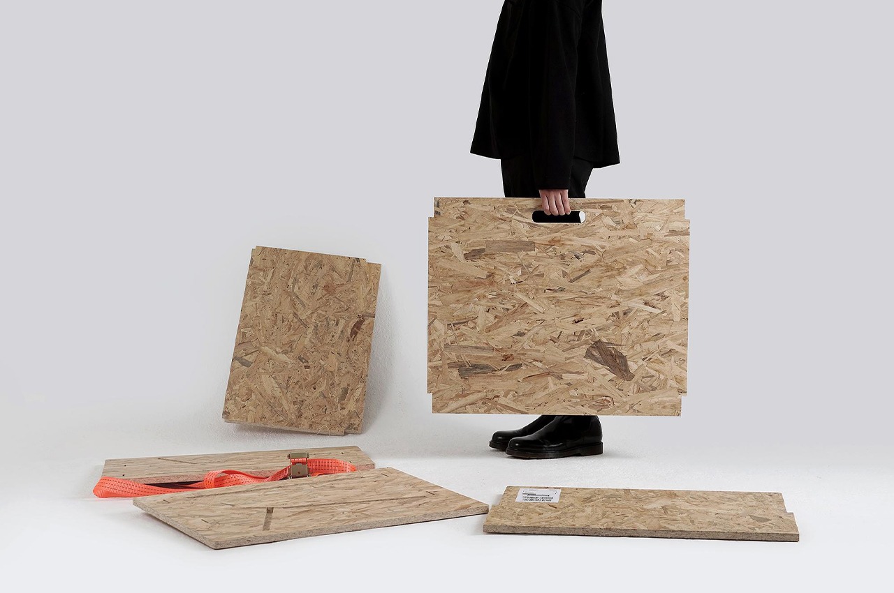
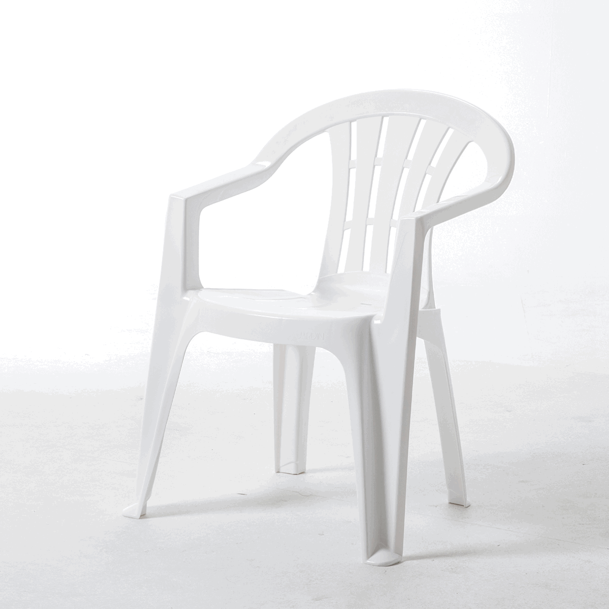

Our relationship to objects varies between items,
but there is no doubt that our perception of these items
goes far beyond utility and aesthetics;
aside from functionality, 
our possessions also represent our extended selves.